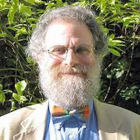

Keynote: Propositions as Types
Keynote: Propositions as Types
The principle of Propositions as Types links logic to computation. At first sight it appears to be a simple coincidence---almost a pun---but it turns out to be remarkably robust, inspiring the design of theorem provers and programming languages, and continuing to influence the forefronts of computing. Propositions as Types has many names and many origins, and is a notion with depth, breadth, and mystery. Learn why functional programming is (and is not) the universal programming language.
About Philip
Philip Wadler is Professor of Theoretical Computer Science at the University of Edinburgh. He is an ACM Fellow and a Fellow of the Royal Society of Edinburgh, past chair of ACM SIGPLAN, past holder of a Royal Society-Wolfson Research Merit Fellowship, and a winner of the POPL Most Influential Paper Award. Previously, he worked or studied at Stanford, Xerox Parc, CMU, Oxford, Chalmers, Glasgow, Bell Labs, and Avaya Labs, and visited as a guest professor in Copenhagen, Sydney, and Paris. He has an h-index of 60, with more than 18,000 citations to his work according to Google Scholar. He contributed to the designs of Haskell, Java, and XQuery, and is a co-author of Introduction to Functional Programming (Prentice Hall, 1988), XQuery from the Experts (Addison Wesley, 2004) and Generics and Collections in Java (O'Reilly, 2006). He has delivered invited talks in locations ranging from Aizu to Zurich.